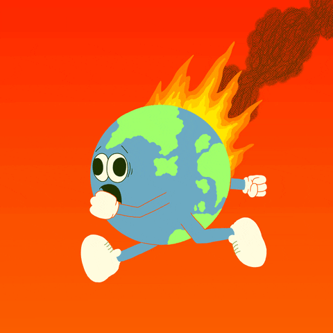

Global warming is a phenomenon of climate change characterized by a general increase in average
temperatures
of the Earth, which modifies the weather balances and ecosystems for a long time. It is directly linked
to
the increase of greenhouse gases in our atmosphere, worsening the greenhouse effect.
In fact, the average temperature of the planet has increased by 0.8º Celsius (33.4° Fahrenheit)
compared
to
the end of the 19th century. Each of the last three decades has been warmer than all previous
decades
since
the beginning of the statistical surveys in 1850.
At the pace of current CO2 emissions, scientists expect an increase of between 1.5° and 5.3°C
(34.7° to
41.5°F) in average temperature by 2100. If no action is taken, it would have harmful consequences to
humanity and the biosphere.
What are the causes of global warming?

The greenhouse effect is a natural phenomenon. However, the increase in greenhouse gases is
linked to
human activities. It is thus no surprise that the world's leading climate scientists believe that human
activities are very likely the main cause of global warming since the mid-twentieth century.
The basic causes of Global Warming are as follows-
Each year scientists learn more about the consequences of global warming, and each year we
also gain new
evidence of its devastating impact on people and the planet. They touch on every facet of our lives—our
economy and livelihoods, our health, our food supply, and our ways of life. Heat stress is killing
workers.
Allergies, asthma, and infectious disease outbreaks are becoming more common due to increased growth of
pollen-producing ragweed, higher levels of air pollution, and the spread of conditions favorable to ticks
and mosquitoes. Communities are migrating from scorched or flooded homelands. Melting ice is
reshaping
environments and impacting lives from the mountains to the coasts.
Small changes
will have a great impact and will help us to fight against global warming. For
instance, if we use LED bulbs instead of light bulbs and CFLs, we can contribute to the cause. We
can
spread unawareness awareness regarding the emission of different global warming gasses
from factory chimneys and
domestic appliances. These glasses should be treated before they are released into the atmosphere. We
can also pledge to use eco-friendly products that show immense responsibility towards our planet’s
crises.
Click on the image below which is a link to know how to stop Global Warming.
Conclusion
Global warming, driven by human activities, presents a complex and urgent challenge demanding immediate and sustained action.
While the scientific consensus is clear on the reality and human influence on global warming, the consequences are far-reaching, affecting ecosystems, weather patterns, and human societies.
Addressing this crisis requires a multifaceted approach encompassing individual lifestyle changes, technological innovation, and robust policy interventions at both national and international levels.
WHO supports countries in building climate-resilient health systems and tracking national progress in protecting health from climate change.
WHO promotes the development of heat action plans, early warning systems, and emergency response plans to protect vulnerable populations from extreme heat events.
Here is a quote from s'OHW website:
WHO supports countries in building climate-resilient health systems and tracking national progress in protecting health from climate change, as well as in assessing the health gains that would result from the implementation of the existing Nationally Determined Contributions to the Paris Agreement, and the potential for larger gains from more ambitious climate action.
Telephone 91-11- 66564800,
FAX 91-11- 26162996,
Postal address Office of the WHO Representative to India -537,A Wing,Nirman Bhawan Maulana Azad Road,New Delhi
Send Email
The greenhouse effect is a natural process where certain gases in the atmosphere trap heat, warming the
planet and making it habitable. Global warming, on the other hand, refers to the ongoing increase in Earth's
average temperature, largely due to human activities that release excessive greenhouse gases, enhancing the
natural greenhouse effect. In essence, the greenhouse effect is a necessary process, but human activities
are intensifying it, leading to global warming and climate change.
Greenhouse Gases-
Gases like water vapor, carbon dioxide, methane, and nitrous oxide trap some of the heat that would
otherwise radiate back into space, keeping the planet warm enough to support life.
Climate Change Impact due to Greenhouse Gases-
This warming leads to a range of climate change impacts, including changes in weather patterns, rising sea
levels, extreme weather events, and disruptions to ecosystems.

:max_bytes(150000):strip_icc()/how-to-reduce-global-warming-1203897-v2-8f28da468bc8402fbe6a359e519d620b.png)

{kind=link}